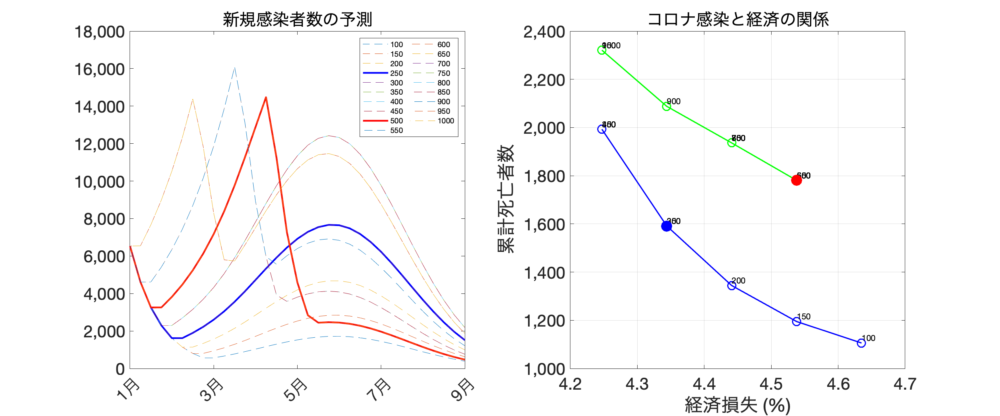

最終アップデート：2021年1月26日
図表の作成に用いたコードやデータファイルはここ.
東京の他のページへのリンク
| tokyo_20210121.html | tokyo_latest.html |
1. 基本シナリオ
|  |
出所: 著者達の計算による。
注: 左のパネルは、基本シナリオ下での新規感染者数の推移。赤（青）い実線は緊急事態宣言解除基準が500（250）人だった場合、その他の細い点線は解除基準人数を変更した場合。右のパネルは、それぞれの解除基準人数によってどのように今後6か月の総死者数と総生産量が影響を受けるかを示す。シナリオの詳細についてはFujii and Nakata (2021)を参照。
2. 分析から学べること
-
上のシナリオでは、新規感染者数が2月8日から始まる週に一日平均500人を割るペースで感染が減少していくシナリオを考えています。
-
このシナリオでは、現在の（もしかしたら悲観的かもしれないし楽観的かもしれない）我々のワクチン接種仮定が正しいとすると、４月頃に新規感染者数の上昇により新たな緊急事態宣言が発令されると予測されます（左の図の赤い線）。そして、右の図の赤い点が緑色の線上にあることは、そのような未来がもし実現すると経済と命の両方にとって良くないことを示しています。
-
このシナリオでは、緊急制限解除基準を下げると（例えば一日平均250人にすると）、新たな緊急事態宣言を避けることが出来ます（左の図の青い線）。そして、右の図の青い点が青色の線上にあることは、そのような未来がもし実現すると、先ほど提示した未来よりと比べて経済と命の両方にとって良いことであることを示しています。
-
具体的な数字は、ワクチン接種の仮定・これからコロナウィルスの感染力がどのように変化していくかによって大きく変わります。しかしながら、我々の分析は「もう一度緊急事態宣言という未来を避けること」が感染症対策としてだけでなく経済活動にとっても中期的な視点ではプラスであるということを強く示唆しています。